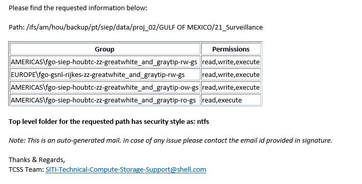
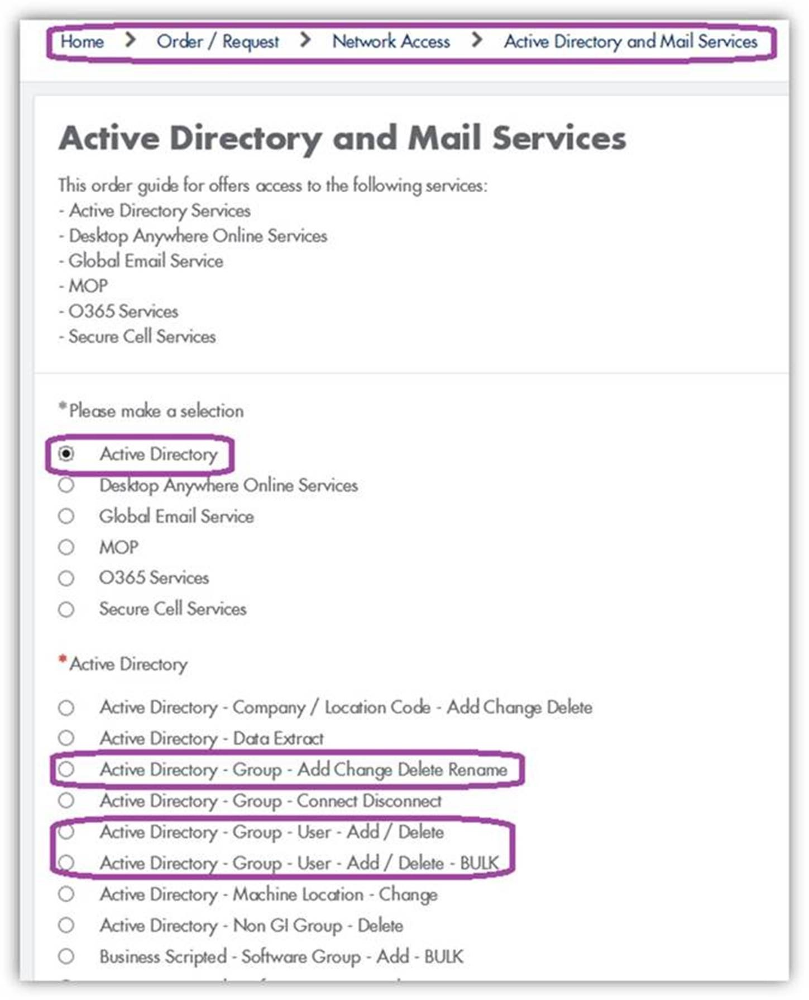
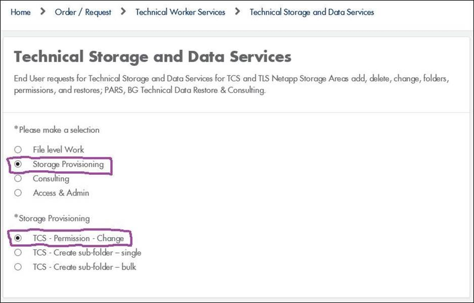
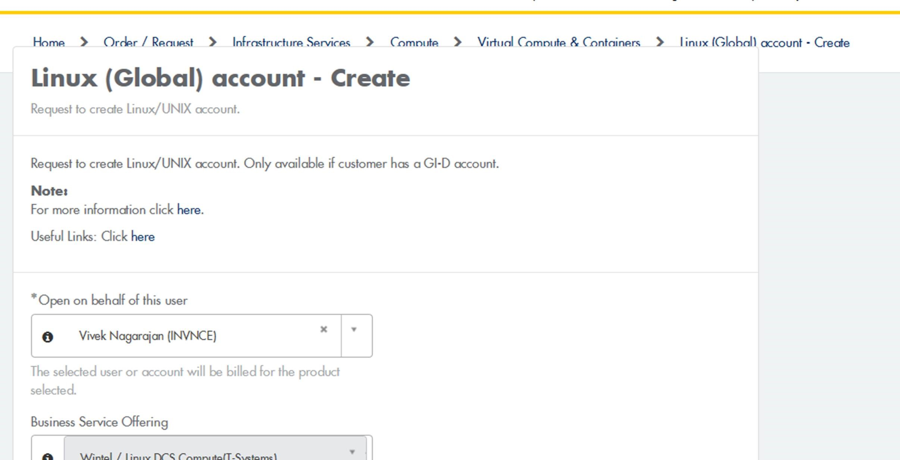
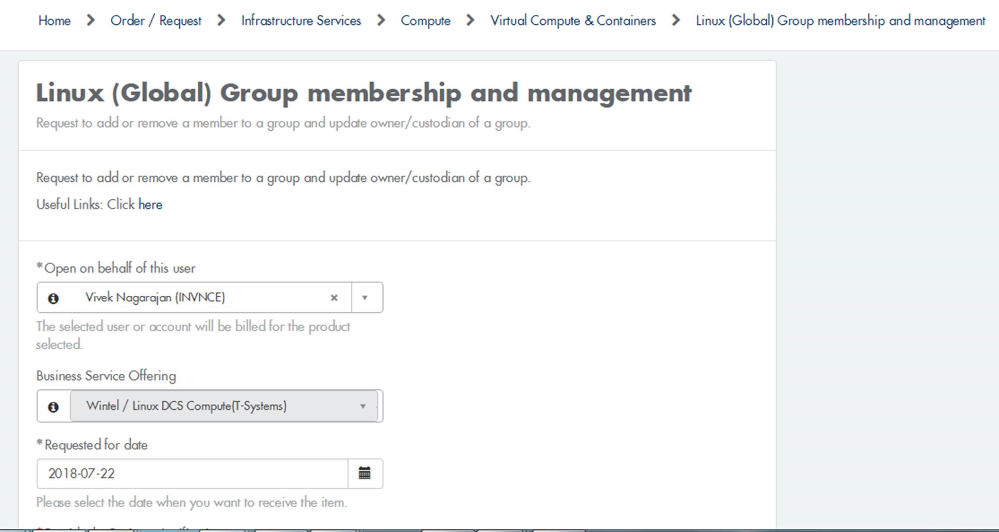

Shell
Contents:
| What to input in GUI? | What is the Output | Message Interpretation | How to get access if the path top level is Linux style |
|---|
What to input in GUI?
What is Path Type
IFS - Isilon File System
- am
- ap
- eu
- for am: hou,cal,rio
- for ap: bng,pej,pth,bri
- for eu: ams,ris
- backup
- nobackup
- scratch
- data
- proj
- seis
- owdata
- corpdata
- field
DFS - Distributed File System Format
- americas.shell.com
- asia-pac.shell.com
- europe.shell.com
- for americas.shell.com: hou,cal,rio
- for asia-pac.shell.com: bng,pej,pth,bri
- for europe.shell.com: ams,ris
- data
- proj
- seis
- owdata
- corpdata
- field
The format for IFS path should be similar to the format provided in example.
e.g. /ifs/L1/L2/L3/L4/L5/L6/L7
L1 - Region
L2 - Location
L3 - Protection Type
L4/L5 - Business Unit
e.g. . ua/sepco, ua/sda etc
L6 - Data Type
L7 - User Folder
e.g. /ifs/am/hou/backup/ua/sepco/proj/< user folder >
The format for IFS path should be similar to the format provided in example.
e.g. . \\Region\tcs\Location\Business Unit\Data Type\<User Folder>
Region
Location
Business Unit
e.g. ua.sepco, ua.sda etc
Data Type
Note: Tool provides support to sub directories of level7 upto any level.
What is the Output
Output is sent to the requestor in the form of an email after 15 minutes of submitting the request.
Sample Email Output:
Message Interpretation
No FGO Group Assigned or if the FGO group does not have required access
- Create the required FGO group in the appropriate domain by submitting a request in ServiceNow:
Active Directory - Group - Add Change Delete Rename (refer to snippet below) - Add the user account(s) to the newly created FGO group by submitting a request in ServiceNow:
Active Directory - Group - User - Add / Delete (refer to snippet below)

- Request for the newly created FGO group to the applied to the path by submitting a request in ServiceNow:
TCS - Permission – Change (refer to snippet below) Duplicate Request
Incorrect Path
Incorrect Location or Incorrect Region or Not TCS path
- \\europe.shell.com\tcs\ams
- \\europe.shell.com\tcs\ris
- \\amercias.shell.com\tcs\hou
- \\amercias.shell.com\tcs\cal
- \\asia-pac.shell.com\tcs\pej
- \\asia-pac.shell.com\tcs\pth
- \\asia-pac.shell.com\tcs\bng
- \\americas.shell.com\tcs\rio
- \\americas.shell.com\tcs\bri
No FGO group is associated with the requested storage path.
What to do Further?
In order to have access the following is the required.

Then select Technical Storage and Data Services. Top navigation choices change once selected.
The request for this Path has already been submitted and its under process. Please wait, you will receive the information over email.
Request for this path can be submitted again after you have received the information over email.
Please follow the naming standards as per the guidelines mentioned in section What to input in GUI?
Please enter the correct location in the path. This Team can only provide details on the following locations:
How to get access if the path top level is Linux style
In order to have access the following is the required
- Have a valid Linux account.
Linux (Global) account - Create – in ServiceNow here - Their Linux account must be correctly linked to the user’s Windows account.
- The account must be a member of the Linux security group Linux_group
Linux (Global) Group membership and management - in ServiceNow here

Linux (Global) Group membership and management
